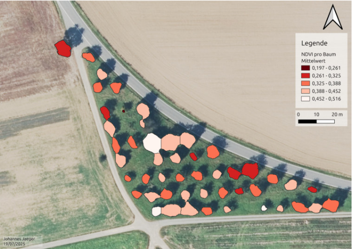

Streuobstwiesen gehören zu den artenreichsten Lebensräumen in Mitteleuropa. Besonders im Süden Deutschlands prägen die locker verteilten, hochstämmigen Obstbäume seit Jahrhunderten die Landschaft. Doch die Bestände schrumpfen seit Jahrzehnten.
Obwohl Streuobstwiesen gesetzlich geschützt sind, fehlt bis heute ein aktueller und vollständiger Überblick darüber, wo sie überhaupt noch stehen. Genau dieses Wissen wäre aber die Grundlage, um sie gezielt zu schützen und zu pflegen. Alle Wiesen zu Fuß zu erfassen, ist bei der riesigen Fläche kaum möglich und viel zu teuer.
Obstbäume aus der Luft erkennen
In dieser Arbeit haben wir ein Verfahren entwickelt, das Streuobstwiesen automatisch in Luftbildern findet. Dabei nutzen wir ausschließlich Daten, die das Land Baden-Württemberg frei zur Verfügung stell: Luftbilder mit einer Auflösung von 20 cm je Pixel und Höhendaten aus einem Oberflächenmodell, aus dem wir die Höhe von Bäumen und Gebäuden ableiten können.
Eine künstliche Intelligenz haben wir auf einem rund 250 Quadratkilometer großen, abwechslungsreichen Gebiet in der Mitte Baden-Württembergs trainiert. Sie lernte dort, Bäume in den Luftbildern zu erkennen. Anschließend zerlegt ein weiterer Arbeitsschritt zusammenhängende Baumflächen in einzelne Baumkronen und prüft, wie die Bäume zueinander stehen. Stehen mindestens sieben Bäume in mehreren Reihen nah beieinander, gilt die Fläche als Streuobstwiese. Kleinere Gruppen werden als Baumreihe oder Einzelbaum eingestuft.
Was wir herausgefunden haben
Die KI erkennt Bäume sehr zuverlässig, auch in Gegenden, die sie während des Trainings nie gesehen hat. Für jeden erkannten Baum lassen sich außerdem Größe und Durchmesser der Krone sowie die Baumhöhe bestimmen. Erste Auswertungen deuten darauf hin, dass sich aus den Bildern auch grob abschätzen lässt, wie gesund die Bäume sind. Hier sind die Ergebnisse allerdings noch nicht zuverlässig genug.
{kind=link}

Einige Herausforderungen bleiben: Hecken und Baumreihen in der Nähe von Obstwiesen werden manchmal fälschlich mitgezählt, sehr junge und kleine Bäume sind in den Bildern schwer zu erkennen, und im Sommer können manche Felder Bäumen zum Verwechseln ähnlich sehen. Zudem werden die Luftbilder nur alle paar Jahre und zu unterschiedlichen Jahreszeiten aufgenommen, was Vergleiche erschwert. Auch das Überprüfen der Ergebnisse ist schwierig, da es bislang keine aktuellen und fehlerfreien Vergleichsdaten gibt.
Warum das wichtig ist
Das Verfahren zeigt, dass sich Streuobstwiesen landesweit und kostengünstig erfassen lassen, ganz ohne teure Drohnenflüge oder Laserscans. Da nur frei verfügbare Daten verwendet werden, lässt sich der Ansatz leicht auf andere Regionen übertragen und auch für andere Landschaftselemente nutzen. Langfristig könnte daraus ein Werkzeug entstehen, mit dem Behörden, Obstbauberater und Landwirte den Zustand der Bestände regelmäßig überwachen. Diese Idee verfolgen wir im laufenden, von der Deutschen Bundesstiftung Umwelt geförderten Projekt „miraculix“ weiter, das sich mit Misteln und anderen Baumkrankheiten beschäftigt.
Veröffentlichung
Die Ergebnisse wurden auf der Jahrestagung der Deutschen Gesellschaft für Photogrammetrie, Fernerkundung und Geoinformation (25.–27. März 2026) in Darmstadt vorgestellt. Der vollständige Beitrag ist im Tagungsband verfügbar:
J. Jäger, M. Mommert, G. Austen, “Einsatz KI-basierter Methoden zur Detektion und Charakterisierung von Streuobstbeständen auf Basis von Open GeoData”, Jahrestagung der Deutschen Gesellschaft für Photogrammetrie, Fernerkundung und Geoinformation, 25.–27. März 2026, Darmstadt, paper verfügbar.